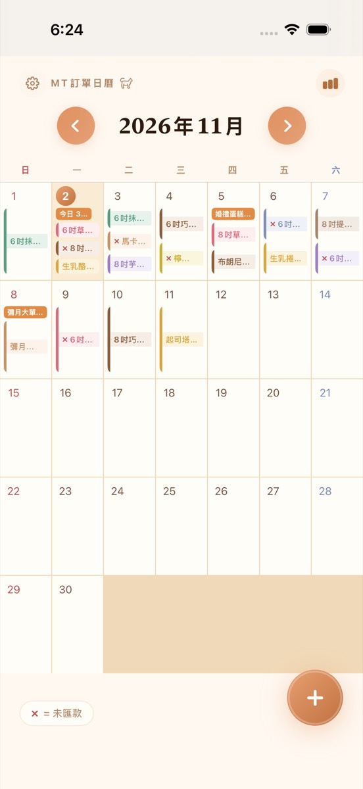
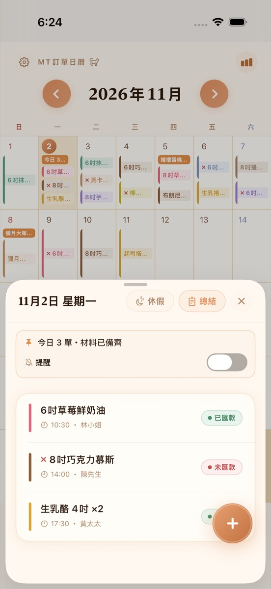

給用 LINE、IG 接單的蛋糕、甜點、手作、團購賣家。日曆看整月、備料提醒、群組共享、製作單一鍵匯出。
在 App Store 下載

把客人的對話複製貼上，日期、品項、數量、金額自動抓出來，抓錯可以直接改。
每筆訂單依品項顏色排在日曆上，點進去看當天清單、標記已匯款。
出貨前把當天的訂單匯成製作單，備料不漏。
輸入群組代碼就同步，一個人接單、一個人做，兩台手機看到同一份。
訂單營業額、其他收入、支出、淨利，月底不用再翻對話紀錄；可匯出 CSV。
每天自動存一份到你的 iCloud 雲碟，換手機匯入就全部回來。
不用。現在是限時一次買斷、永久更新，之後所有新功能都包含。下載後免費試用 14 天，所有功能都能用。
把客人的對話複製後貼到 App，日期、品項、數量、金額會自動抓出來，抓錯可以直接改；也可以手動新增。
可以。建立群組後把代碼給夥伴，兩台手機的訂單會同步，誰改了都看得到。
存在你的手機，不經過我們的伺服器。開啟自動雲端備份後，每天自動存一份到你選的 iCloud 雲碟資料夾，換手機匯入就全部回來。
可以匯出當日製作單和訂單資料（CSV），用 Excel 打開。